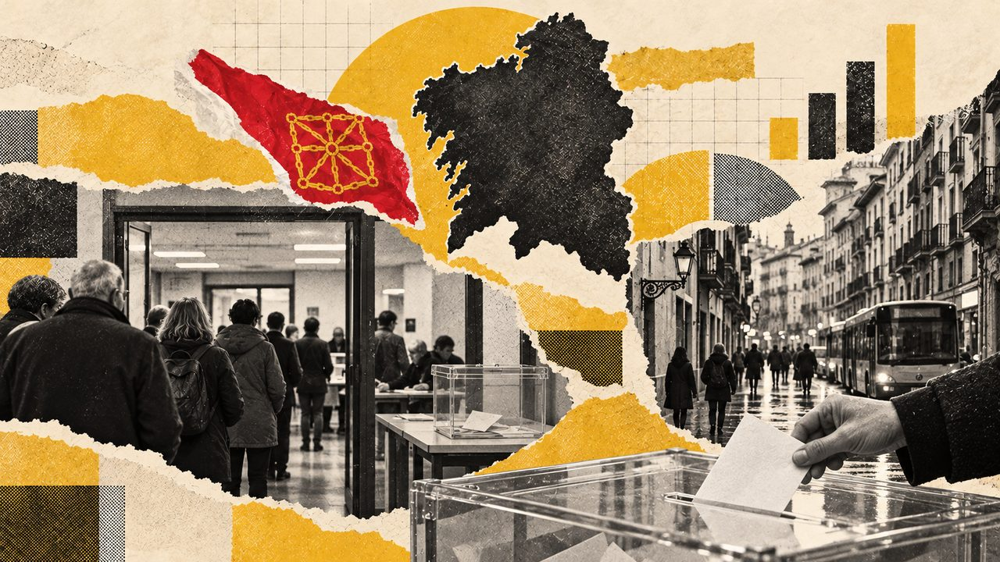

Actualidad · Las comunidades en las urnas · Navarra
UPN ha sido la lista más votada en las nueve últimas elecciones navarras, pero desde 2015 gobiernan otros
Nadie ha tenido nunca mayoría absoluta en el Parlamento de Navarra. UPN ganó todas las forales desde 1991 y gobernó hasta 2015; desde entonces presiden Barkos y Chivite. En las generales, UPN y el PP fueron primeros de 1989 a 2019, y en 2023 ganó el PSN.
Por Nacho G. del Álamo ·

Navarra ha elegido doce veces su parlamento desde 1979, y desde 1991 la lista más votada ha sido siempre la misma: la de Unión del Pueblo Navarro (UPN), sola o, en 2019, dentro de la coalición Navarra Suma. Son nueve victorias seguidas. Pero ganar no le ha bastado para gobernar. UPN presidió la Comunidad Foral de 1991 a 1995 y de 1996 a 2015; desde 2015 gobiernan otros, primero Uxue Barkos, de Geroa Bai, y desde 2019 la socialista María Chivite.
En las generales pasó algo parecido. La candidatura conjunta de UPN y el PP fue la más votada en Navarra en las once elecciones que van de 1989 a noviembre de 2019. En 2023, UPN y el PP se presentaron por separado y la lista más votada fue la del Partido Socialista de Navarra (PSN-PSOE), con el 27,6% de los votos.
Este reportaje recorre esa historia con los resultados de las doce elecciones al Parlamento de Navarra, de 1979 a 2023, y de las dieciséis generales desde 1977, municipio a municipio.
Doce parlamentos sin mayoría absoluta
En Navarra nadie ha tenido nunca mayoría absoluta. El mejor resultado en escaños fue el de UPN en 2003, con 23 de los 50 diputados, a tres de la mitad más uno. En 1979, antes de la Ley de Amejoramiento del Fuero de 1982, se eligieron 70 parlamentarios forales por merindades; desde 1983 son 50, en una sola circunscripción.
Ver los datos en tabla
Esa fragmentación produjo un sistema de investidura singular. Según Historia Electoral, la norma navarra preveía que, si ningún candidato lograba la confianza de la cámara en 90 días, quedaba proclamado presidente el cabeza de la lista más votada. Así llegaron cuatro presidencias: la de Gabriel Urralburu en 1984 y en 1987, la de Juan Cruz Alli en 1991 y la de Miguel Sanz en 1996.
La primera fue la más enrevesada. En 1983 el PSN ganó con 20 escaños, pero en junio José Ángel Zubiaur, de UPN, reunió 21 votos a favor y 23 en contra en cuatro votaciones; en marzo de 1984 Urralburu sacó 20 a favor y 24 en contra. El presidente del Parlamento, de UPN, propuso al Rey a Zubiaur por haber reunido más votos. El PSN recurrió y en mayo de 1984 el Tribunal Constitucional resolvió que la presidencia correspondía a Urralburu, como cabeza de la lista más votada.
| Presidente | Partido | Mandato |
|---|---|---|
| Jaime Ignacio del Burgo | UCD | 1979–1980 |
| Juan Manuel Arza | UCD | 1980–1984 |
| Gabriel Urralburu | PSN-PSOE | 1984–1991 |
| Juan Cruz Alli | UPN, luego CDN | 1991–1995 |
| Javier Otano | PSN-PSOE | 1995–1996 |
| Miguel Sanz | UPN | 1996–2011 |
| Yolanda Barcina | UPN | 2011–2015 |
| Uxue Barkos | Geroa Bai | 2015–2019 |
| María Chivite | PSN-PSOE | 2019–hoy |
Presidentes de la Diputación Foral (1979-1984) y del Gobierno de Navarra. Se omiten las presidencias en funciones de Del Burgo (enero-mayo de 1984) y de Alli (junio-septiembre de 1996). Fuente: Historia Electoral.
UPN, la derecha unida y sus escisiones
En 1987 los socialistas volvieron a ser primeros, con 15 escaños, mientras la derecha se dividía en tres listas: UPN, la Unión Demócrata Foral y Alianza Popular, que sumaron 19. Urralburu fue proclamado otra vez por el procedimiento automático. En 1991 el PP se integró en UPN, que pasó a ser su socio permanente en Navarra, y ese año UPN ganó con 20 escaños. Juan Cruz Alli fue presidente.
La alianza con el PP partió al propio partido. En 1995 Alli fundó Convergencia de Demócratas de Navarra (CDN), que sacó 10 escaños en su estreno. Con ella y con Eusko Alkartasuna, el socialista Javier Otano formó el primer gobierno de coalición de Navarra, pero dimitió en junio de 1996; la crónica de aquellas elecciones lo vincula a un caso de corrupción. Miguel Sanz, de UPN, no logró ser investido y fue proclamado presidente en septiembre como cabeza de la lista más votada.
Sanz gobernó quince años. En 2007, UPN sacó su mejor porcentaje, el 42,2%, pero el bloque de UPN y CDN se quedó sin mayoría. El PSN llegó a estudiar un gobierno con Nafarroa Bai e Izquierda Unida, y la dirección federal del PSOE lo vetó, según recogen Historia Electoral y la crónica de aquellas elecciones. Sanz siguió con los votos en blanco de casi todo el grupo socialista. Su sucesora, Yolanda Barcina, gobernó desde 2011 en coalición con el PSN hasta junio de 2012, y después en minoría.
2015: el cambio
En mayo de 2015 UPN volvió a ganar, con 15 escaños, pero UPN, el PSN y el PP ya no sumaban mayoría. Geroa Bai, la coalición de Uxue Barkos con el PNV, quedó segunda con 9. Barkos fue investida el 20 de julio con 26 votos, los de Geroa Bai, EH Bildu, Podemos e Izquierda-Ezkerra. El jurista Martín María Razquin Lizarraga lo describió así:
«Las elecciones de mayo de 2015 y sobre todo la formación del nuevo Gobierno en el mes de julio han constituido un cambio radical en Navarra porque por vez primera partidos nacionalistas, con apoyo de otras fuerzas políticas, han conseguido el Gobierno de Navarra»
En 2019, UPN, el PP y Ciudadanos se presentaron juntos como Navarra Suma y sacaron 20 escaños, el 36,6% de los votos. No les alcanzó. María Chivite fue investida en segunda votación con 23 votos, los del PSN, Geroa Bai, Podemos e Izquierda-Ezkerra, y la abstención de cinco diputados de EH Bildu. En 2023 repitió la fórmula: 21 votos a favor, 20 en contra de UPN, PP y Vox, y la abstención de los 9 parlamentarios de EH Bildu, que ya superaba a Geroa Bai. Barkos, que había dejado la presidencia, reivindicaba en 2022 el papel de su partido:
«Geroa Bai es artífice del cambio. Protagonista necesario e indiscutible: y eso es lo que les preocupa»
Las próximas elecciones forales tocan en mayo de 2027.
En las generales: once victorias de UPN y el PP
En las primeras generales, en 1977, ganó UCD con el 29,1%, pero casi la mitad del voto navarro, el 47,1%, fue a listas pequeñas, como la Unión Navarra de Izquierdas o Alianza Foral Navarra. Por eso la línea de «Otras listas» arranca tan alta en el gráfico. El PSOE ganó en 1982 y 1986, y desde 1989 la candidatura de UPN y el PP fue la primera en todas las elecciones hasta noviembre de 2019. Su techo fue el 51,9% de 2000.
Ver los datos en tabla
Los nacionalistas vascos aparecen en el gráfico en dos sitios. Herri Batasuna y sus herederos, Amaiur y EH Bildu, tienen línea propia: el 14,1% en 1986, el 15,2% de Amaiur en 2011 y el 17,5% de EH Bildu en 2023, cuando fue la segunda lista. Nafarroa Bai y Geroa Bai, en cambio, van en «Otras listas»: Nafarroa Bai sacó el 18,4% en 2004 y el 18,8% en 2008, y Geroa Bai, el 13,1% en 2011. A la izquierda del PSOE, Podemos quedó segundo en 2015, con el 23,2% (en el gráfico, su línea suma también el 4,2% de IU), y Unidos Podemos subió al 28,6% en 2016.
Ver los datos en tabla
Ver los datos en tabla
En 2023, por separado, el PP sacó el 16,8% y UPN el 15,4%, por detrás del PSN y de EH Bildu, que tuvo el 17,5%. El reparto de escaños lo refleja: dos diputados para el PSN y uno para EH Bildu, el PP y UPN. Razquin Lizarraga lo resumió así en su informe de 2023:
«EH Bildu gana fuerza al quedar como segunda fuerza política y UPN la pierde al quedar en último lugar, detrás del PP»
Ver los datos en tabla
Lo mismo pasa en las ciudades. En Pamplona, la lista de UPN con AP o con el PP fue la más votada en todas las generales de 1986 a noviembre de 2019; en 2023 la primera lista fue la del PSN, con el 24,9%, seguida de EH Bildu (17,8%) y el PP (17,6%). En Tudela, la segunda ciudad, también ganó el PSN en 2023 (29,3%). Ansoáin, junto a Pamplona, ha votado al PSOE en todas las generales menos en 2015 y 2016, cuando ganó Podemos; Burlada y Tafalla han sido socialistas en la mayoría de ellas. Ribaforada, en la Ribera, es el único municipio navarro que ha votado al mismo partido en las 16 generales: al PSOE.
El mapa por municipios dibuja una Navarra partida en dos. En 1977, UCD fue la lista más votada en 194 de los 272 municipios actuales, y el PSOE en 33, sobre todo en la Ribera, en el sur. En 2000, la candidatura de UPN y el PP ganó en 252. Desde 2011, cuando Amaiur fue primera en 69 municipios, la mitad norte se tiñe del color de la izquierda abertzale, y en noviembre de 2019 EH Bildu ganó en 101, frente a 109 de Navarra Suma. En 2023, contando cada lista por separado, EH Bildu fue la más votada en 121 municipios, el PSN en 112 y el PP o UPN en 36.
Participación: alrededor de la media
Sin contar el voto exterior, Navarra votó más que el conjunto de España en siete de las dieciséis generales, entre ellas las tres primeras, y menos en las otras nueve. En 2023 participó el 69,9% del censo, frente al 70,4% del país.
Ver los datos en tabla
Qué mirar el 29N
Navarra elige 5 diputados. En 2023 fueron dos para el PSN y uno para EH Bildu, el PP y UPN. El 29 de noviembre dirá si el PSN repite como primera lista, si EH Bildu sigue por delante del PP y de UPN, y si estos dos partidos vuelven a presentarse por separado o juntos, como hicieron en todas las generales de 1989 a 2019.
Método y fuentes
- Qué se compara
- Las 12 elecciones al Parlamento de Navarra (1979-2023) y las 16 generales (1977-2023) en Navarra, por municipio.
- Límites
- Las generales se cuentan sin voto exterior (CERA), así que la participación sale algo por encima de la oficial. Hasta 2000 el ganador de cada provincia y municipio es la candidatura más votada de todas; desde 2004, la familia de partidos más votada (los regionalistas van en «Otras listas»). La familia PCE / IU / Podemos / Sumar suma listas que en 2015 y 2019 se presentaron por separado en algunas comunidades (Podemos, IU, Compromís, Más País): en el gráfico de voto su línea es la suma, pero el ganador de cada provincia, ciudad y municipio de esos años se ha calculado lista a lista con los datos por mesa de Interior (vía pollspaindata). En 1982 faltan en el fichero de Interior unos 139 municipios de toda España. Los escaños autonómicos son los de Historia Electoral, comprobados con Wikipedia en las elecciones que se citan en el texto. En Navarra, UPN va con el color del PP en todas las generales; en 2023, cuando se presentaron por separado, el ganador de la provincia, de cada ciudad y de cada municipio se ha calculado lista a lista con los datos por mesa de pollspaindata.
- Cómo se calcula
- Porcentajes sobre votos a candidaturas, salvo la participación, que es sobre el censo. Cifras reproducibles con los scripts del expediente de la pieza. Metodología del Atlas
- Fuentes
- Ministerio del Interior (Infoelectoral), resultados de las elecciones generales desde 1977 por municipio y por mesa; de 1986 a 2003, vía pollspaindata. Sin voto exterior (CERA)
- pollspaindata (datos de Interior por mesa): votos de cada candidatura en las generales de 2015, 2019 y 2023, para el ganador lista a lista
- Historia Electoral, elecciones autonómicas en Navarra (escaños, votos e investiduras)
- Martín María Razquin Lizarraga, «Navarra», Informe Comunidades Autónomas 2015, Instituto de Derecho Público (IDP Barcelona)
- Martín María Razquin Lizarraga, «Navarra», Informe Comunidades Autónomas 2023, IDP Barcelona
- Onda Vasca / Noticias de Gipuzkoa, «Barkos reivindica a Geroa Bai como la fuerza imprescindible del cambio» (10-9-2022)
- pollspaindata (datos de Interior por mesa): votos de cada candidatura en Navarra en las generales de 2004 a 2023
- Wikipedia, Elecciones al Parlamento de Navarra de 1995
- Wikipedia, Elecciones al Parlamento de Navarra de 2007
- Autoría
- Nacho G. del Álamo
- Revisión de datos y texto
- Nacho G. del Álamo, 9 de octubre de 2026
- Publicado · actualizado
- 9 de octubre de 2026 · 9 de octubre de 2026
- Correcciones
- Ninguna.
Serie «Las comunidades en las urnas»: 19 piezas
- El PSOE gobernó Andalucía 36 años seguidos; desde 2019 la Junta es del PP, que ahora gobierna con Vox dentro
- Huesca y Zaragoza han votado al ganador de España en las 16 generales; en sus Cortes nadie ha tenido nunca mayoría absoluta
- El PSOE ha gobernado Asturias en diez de sus doce legislaturas; en las generales, el PP ganó allí en 2004 aunque España votó a Zapatero
- El PP ha ganado diez de las once autonómicas en Baleares, pero entre 1999 y 2015 el Govern cambió de manos en cada elección
- El PSOE ha ganado siete de las once autonómicas canarias, pero solo ha gobernado tres legislaturas
- El PP ha ganado nueve de las once autonómicas en Cantabria, pero Revilla, del PRC, la presidió dieciséis años
- El PSOE ha gobernado Castilla-La Mancha en diez de sus once legislaturas; en las generales, el PP ganó allí incluso en 2004 y 2008, con Zapatero
- El PP gobierna Castilla y León desde 1987 y ha ganado allí 11 de las 16 generales; el PSOE ganó las autonómicas de 2019 y no gobernó
- El PSC ha sido el más votado en Cataluña en 11 de las 16 generales; la Generalitat la presidió CiU 23 años seguidos
- La Comunitat Valenciana votó al PP en las generales de 1993, 2004 y 2008, cuando España eligió al PSOE; en la Generalitat, el PP gobernó 20 años seguidos
- El PSOE ha ganado 11 de las 16 generales en Extremadura y gobernó la Junta nueve legislaturas; en 2025 cayó al 25,8%
- El PP ha ganado las doce elecciones gallegas y solo perdió la Xunta dos veces; en las generales, el PSOE ganó allí una sola vez, en 2019
- El PP gobierna Madrid desde 1995, también tras perder en 2019; Ayuso pasó de 30 a 70 escaños en cuatro años
- Murcia es la única provincia donde Vox ha ganado unas generales; el PP la gobierna desde 1995 y ahora depende de Vox
- Estás aquíUPN ha sido la lista más votada en las nueve últimas elecciones navarras, pero desde 2015 gobiernan otros
- El PNV ha sido el más votado en las trece elecciones vascas; en las generales perdió el primer puesto cinco veces, ante el PSE y Podemos
- La Rioja ha votado más que la media de España en las 16 generales, y el PP la gobernó 24 años seguidos
- Ceuta es uno de los dos sitios donde Vox ha ganado unas generales; en su Asamblea, Vivas gobierna desde 2001 tras dos mociones de censura
- Melilla tuvo cuatro años un presidente con un solo escaño de 25; en las generales vota al PP desde 1996 y en 2019 rozó el cambio
Sigue leyendo
- Camino al 29N · EspañaVox saca casi lo mismo donde uno de cada tres vecinos nació fuera que donde casi nadie lo hizo
- Camino al 29N · EspañaEl espacio a la izquierda del PSOE fue el más votado en 9.810 secciones en 2015; en 2023, en 182
- Camino al 29N · MadridEn Madrid, el PSOE saca diez puntos más cuando se vota al Gobierno que cuando se vota al alcalde
- ActualidadTodas las piezas de actualidad
- AtlasAtlas de las anomalías electorales